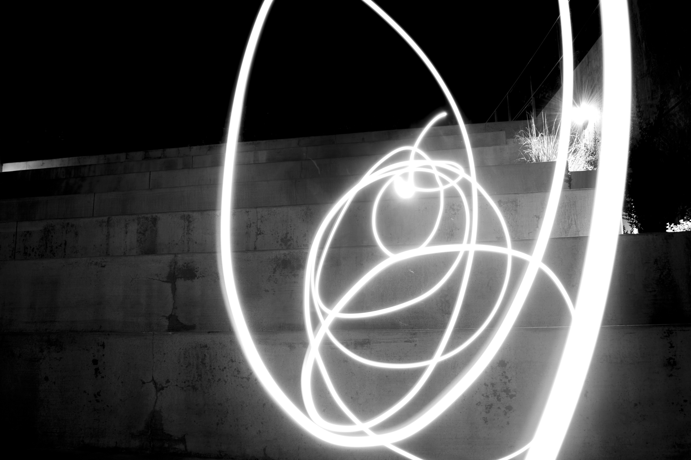
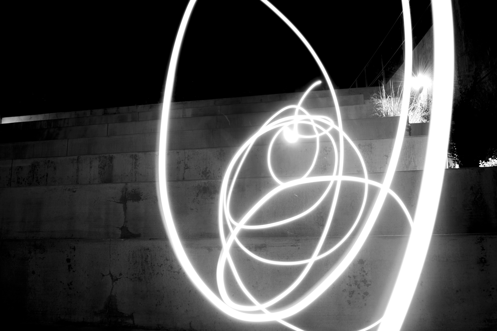

Chasing Light
by Sosofarsosofie
Nikon D3400
"Chasing light" was a class assignment where we explored light and how it changes the composition of a picture. The 25 images must explore different types of light. Besides that rule, we were able to photograph whatever we wanted.
Most of the pictures presented here were take at San Jose. A few, however, were taken at Monterey and Woodland, CA. This assignment challenged me to look at the world in a way I have not seen before. It was important to me to highlight the beauty in small things as well as the larger things. I wanted my viewers to see the world how I see it.


 
